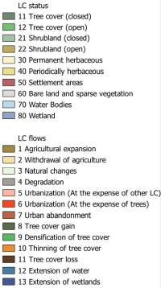

<!doctype html>
<html lang="en">
    <head>
        <meta charset="utf-8">
        <meta http-equiv="X-UA-Compatible" content="IE=edge">
        <meta name="viewport" content="initial-scale=1,user-scalable=no,maximum-scale=1,width=device-width">
        <meta name="mobile-web-app-capable" content="yes">
        <meta name="apple-mobile-web-app-capable" content="yes">
        <link rel="stylesheet" href="css/leaflet.css">
        <link rel="stylesheet" href="css/L.Control.Layers.Tree.css">
        <link rel="stylesheet" href="css/qgis2web.css">
        <link rel="stylesheet" href="css/fontawesome-all.min.css">
        <style>
        html, body, #map {
            width: 100%;
            height: 100%;
            padding: 0;
            margin: 0;
            font-family: -apple-system, BlinkMacSystemFont, "Segoe UI", Roboto, Helvetica, Arial, sans-serif;
        }

        /* --- UNIFIED CONTROL STYLING --- */
        .leaflet-control-layers,
        .leaflet-bar,
        .legend-control {
            border: 2px solid rgba(0,0,0,0.2) !important;
            border-radius: 8px !important;
            box-shadow: 0 4px 6px -1px rgba(0, 0, 0, 0.1), 0 2px 4px -1px rgba(0, 0, 0, 0.06) !important;
            background-color: #fff;
            overflow: hidden; 
            background-clip: padding-box;
        }

        .leaflet-touch .leaflet-bar a:first-child {
            border-top-left-radius: 6px !important; 
            border-top-right-radius: 6px !important;
        }
        .leaflet-touch .leaflet-bar a:last-child {
            border-bottom-left-radius: 6px !important;
            border-bottom-right-radius: 6px !important;
        }

        /* --- LEGEND STYLES --- */
        .legend-control {
            width: auto;          
            min-width: 150px;     
            max-width: 250px;
            margin-bottom: 10px !important; 
            margin-right: 10px !important;
        }

        .legend-header {
            padding: 12px 15px;
            cursor: pointer;
            border-bottom: 1px solid #f0f0f0;
            background-color: #fff;
            font-size: 14px;
            font-weight: 600;
            color: #333;
            display: flex;
            justify-content: space-between;
            align-items: center;
        }

        .header-collapsed { border-bottom: none !important; }
        .legend-image { padding: 10px; display: block; background: white; }
        .legend-image.hidden { display: none; padding: 0; }

        /* --- LAYER CONTROL STYLES --- */
        .layer-control-header {
            padding: 12px 10px 5px 10px; 
            cursor: pointer;
            font-size: 14px;
            font-weight: 600;
            color: #333;
            display: flex;
            justify-content: space-between;
            align-items: center;
        }
        
        .leaflet-control-layers {
            padding: 0 !important; 
            width: fit-content !important; 
            min-width: auto; 
            max-width: 350px;
            margin-bottom: 10px !important;
        }

        .leaflet-control-layers-list {
            padding: 2px 10px 15px 8px; 
            overflow-y: auto;
            max-height: 60vh;
            color: #444;
        }

        .leaflet-control-layers label {
            display: flex;
            align-items: flex-start;
            justify-content: flex-start; 
            flex-wrap: wrap; 
            margin-bottom: 8px; 
            cursor: pointer;
        }

        .leaflet-control-layers-selector + span {
            order: 2; 
            flex-grow: 1;
            display: flex;
            flex-direction: column; 
            width: auto; 
        }

        /* TOGGLE SWITCH */
        .leaflet-control-layers-selector {
            order: -1; 
            appearance: none;
            -webkit-appearance: none;
            width: 36px;
            min-width: 36px;
            height: 20px;
            background: #e9ecef;
            border-radius: 20px;
            position: relative;
            cursor: pointer;
            outline: none;
            transition: background 0.3s;
            margin-right: 12px; 
            border: 1px solid #dee2e6;
        }

        .leaflet-control-layers-selector::after {
            content: '';
            position: absolute;
            top: 2px; left: 2px;
            width: 14px; height: 14px;
            background: white;
            border-radius: 50%;
            transition: transform 0.3s cubic-bezier(0.4, 0.0, 0.2, 1);
            box-shadow: 0 1px 3px rgba(0,0,0,0.2);
        }

        .leaflet-control-layers-selector:checked { background: #28a745; border-color: #28a745; }
        .toggle-blue:checked { background: #007bff !important; border-color: #007bff !important; }
        .toggle-black:checked { background: #000000 !important; border-color: #000000 !important; }
        .toggle-red:checked { background: #dc3545 !important; border-color: #dc3545 !important; }

        .leaflet-control-layers-selector:checked::after { transform: translateX(16px); }

        /* SLIDER STYLING */
        .slider-row {
            padding-left: 0; 
            margin-bottom: 5px;
            margin-top: 2px; 
            display: block;
            flex-basis: 100%;
        }

        .leaflet-control-layers-selector + span .slider-row {
            margin-left: -48px; 
            width: calc(100% + 48px); 
        }
        
        .slider-label-text {
            font-size: 12px;
            color: #6c757d;
            display: flex;
            justify-content: space-between;
            width: 100%; 
            margin-bottom: 5px;
            font-weight: 500;
        }

        .active-value { font-weight: 600; color: #495057; }
        
        #year-tree-display, #period-display {
            color: #0c8f2b;
            padding: 2px 6px;
            border-radius: 4px;
            font-size: 14px;
        }

        .slider-wrapper {
            position: relative;
            width: 100%; 
            height: 6px; 
            display: flex;
            align-items: center;
        }

        .custom-slider {
            -webkit-appearance: none;
            appearance: none;
            width: 100%; 
            height: 4px; 
            background: transparent;
            outline: none;
            cursor: pointer;
            position: relative;
            z-index: 3; 
            --track-color: #6c757d;
            --track-light: #e9ecef;
            --value: 100%;
        }

        .custom-slider::-webkit-slider-runnable-track { 
            width: 100%; height: 4px; border-radius: 4px; 
            background: linear-gradient(to right, var(--track-light) 0%, var(--track-color) var(--value), #e9ecef var(--value), #e9ecef 100%);
        }

        .custom-slider::-webkit-slider-thumb {
            -webkit-appearance: none; height: 18px; width: 18px;
            border-radius: 50%; background: #fff; margin-top: -7px;
            border: 1px solid var(--track-color); 
            box-shadow: 0 2px 4px rgba(0,0,0,0.1);
        }

        .slider-disabled { opacity: 0.4; pointer-events: none; filter: grayscale(100%); }
        .layer-list-hidden { display: none !important; }

        /* TICK DOTS */
        #year-ticks {
            position: absolute; top: -2px; left: 0; right: 0; height: 4px;
            pointer-events: none; z-index: 1;
            display: flex; justify-content: space-between; align-items: center;
            padding: 0 9px; box-sizing: border-box;
        }
        .tick-dot { width: 3px; height: 3px; background-color: #adb5bd; border-radius: 50%; }

        </style>
    </head>
    <body>
        <div id="map"></div>

        <script src="js/qgis2web_expressions.js"></script>
        <script src="js/leaflet.js"></script>
        <script src="js/L.Control.Layers.Tree.min.js"></script>
        <script src="js/leaflet.rotatedMarker.js"></script>
        <script src="js/leaflet.pattern.js"></script>
        <script src="js/leaflet-hash.js"></script>
        <script src="js/Autolinker.min.js"></script>
        <script src="js/rbush.min.js"></script>
        <script src="js/labelgun.min.js"></script>
        <script src="js/labels.js"></script>
        <script src="data/AOIGreenNexus_5.js"></script>
        <script src="data/Zambia.js"></script>
        <script>
        var map = L.map('map', {
            zoomControl:false, maxZoom:18, minZoom:3
        }).fitBounds([[-19.0,23.0],[-9.0,33.0]]);
        
        var hash = new L.Hash(map);
        map.attributionControl.setPrefix('<a href="https://github.com/tomchadwin/qgis2web" target="_blank">qgis2web</a> &middot; <a href="https://leafletjs.com">Leaflet</a>');
        
        /* --- PANES --- */
        map.createPane('pane_Status');
        map.getPane('pane_Status').style.zIndex = 405;
        map.createPane('pane_Flows');
        map.getPane('pane_Flows').style.zIndex = 406;
        map.createPane('pane_Vectors');
        map.getPane('pane_Vectors').style.zIndex = 410;

        /* --- BASEMAPS --- */
        map.createPane('pane_GoogleEarth_0');
        map.getPane('pane_GoogleEarth_0').style.zIndex = 400;
        var layer_GoogleEarth_0 = L.tileLayer('http://mt0.google.com/vt/lyrs=s&hl=en&x={x}&y={y}&z={z}', {
            pane: 'pane_GoogleEarth_0', opacity: 0.95, minZoom: 3, maxZoom: 18
        });
        map.addLayer(layer_GoogleEarth_0);

        map.createPane('pane_OpenStreetMap_1');
        map.getPane('pane_OpenStreetMap_1').style.zIndex = 401;
        var layer_OpenStreetMap_1 = L.tileLayer('https://tile.openstreetmap.org/{z}/{x}/{y}.png', {
            pane: 'pane_OpenStreetMap_1', opacity: 0.7, minZoom: 3, maxZoom: 18
        });
        
        /* --- LC STATUS LAYERS --- */
        var statusLayers = [
            { year: 2000, layer: L.tileLayer('https://eu-central-1.linodeobjects.com/gisat-data/SLIM_GST-239/project/data/XYZ/XYZ_LULC_2000_v3/{z}/{x}/{y}.png', { pane: 'pane_Status', maxZoom: 18 }) },
            { year: 2005, layer: L.tileLayer('https://eu-central-1.linodeobjects.com/gisat-data/SLIM_GST-239/project/data/XYZ/XYZ_LULC_2005_v3/{z}/{x}/{y}.png', { pane: 'pane_Status', maxZoom: 18 }) },
            { year: 2010, layer: L.tileLayer('https://eu-central-1.linodeobjects.com/gisat-data/SLIM_GST-239/project/data/XYZ/XYZ_LULC_2010_v3/{z}/{x}/{y}.png', { pane: 'pane_Status', maxZoom: 18 }) },
            { year: 2015, layer: L.tileLayer('https://eu-central-1.linodeobjects.com/gisat-data/SLIM_GST-239/project/data/XYZ/XYZ_LULC_2015_v3/{z}/{x}/{y}.png', { pane: 'pane_Status', maxZoom: 18 }) },
            { year: 2020, layer: L.tileLayer('https://eu-central-1.linodeobjects.com/gisat-data/SLIM_GST-239/project/data/XYZ/XYZ_LULC_2020_v3/{z}/{x}/{y}.png', { pane: 'pane_Status', maxZoom: 18 }) },
            { year: 2024, layer: L.tileLayer('https://eu-central-1.linodeobjects.com/gisat-data/SLIM_GST-239/project/data/XYZ/XYZ_LULC_2024_v3/{z}/{x}/{y}.png', { pane: 'pane_Status', maxZoom: 18 }) }
        ];
        var group_LCStatus = L.layerGroup([statusLayers[5].layer]);
        map.addLayer(group_LCStatus);

        /* --- LC FLOWS LAYERS --- */
        var flowsLayers = [
            { period: "2000-2005", layer: L.tileLayer('https://eu-central-1.linodeobjects.com/gisat-data/SLIM_GST-239/project/data/XYZ/XYZ_LULC_ChangeFlows_2000_2005_v3/{z}/{x}/{y}.png', { pane: 'pane_Flows', maxZoom: 18 }) },
            { period: "2005-2010", layer: L.tileLayer('https://eu-central-1.linodeobjects.com/gisat-data/SLIM_GST-239/project/data/XYZ/XYZ_LULC_ChangeFlows_2005_2010_v3/{z}/{x}/{y}.png', { pane: 'pane_Flows', maxZoom: 18 }) },
            { period: "2010-2015", layer: L.tileLayer('https://eu-central-1.linodeobjects.com/gisat-data/SLIM_GST-239/project/data/XYZ/XYZ_LULC_ChangeFlows_2010_2015_v3/{z}/{x}/{y}.png', { pane: 'pane_Flows', maxZoom: 18 }) },
            { period: "2015-2020", layer: L.tileLayer('https://eu-central-1.linodeobjects.com/gisat-data/SLIM_GST-239/project/data/XYZ/XYZ_LULC_ChangeFlows_2015_2020_v3/{z}/{x}/{y}.png', { pane: 'pane_Flows', maxZoom: 18 }) },
            { period: "2020-2024", layer: L.tileLayer('https://eu-central-1.linodeobjects.com/gisat-data/SLIM_GST-239/project/data/XYZ/XYZ_LULC_ChangeFlows_2020_2024_v3/{z}/{x}/{y}.png', { pane: 'pane_Flows', maxZoom: 18 }) }
        ];
        var group_LCFlows = L.layerGroup([]);

        /* --- VECTORS --- */
        var layer_AOIGreenNexus_5 = new L.geoJson(json_AOIGreenNexus_5, { 
            pane: 'pane_Vectors', interactive: false, style: { color: 'rgba(168,0,0,1.0)', weight: 1.0, fillOpacity: 0 } 
        }).addTo(map);

        var layer_Zambia = new L.geoJson(json_Zambia, { 
            pane: 'pane_Vectors', interactive: false, style: { color: '#000000', weight: 1.0, fillOpacity: 0 } 
        }).addTo(map);

        /* --- UI COMPONENTS --- */
        var flowsSliderHTML = `
            <div id="flows-slider-wrapper" style="margin-top: -22px; margin-bottom: 40px;">
                <div class="slider-row">
                    <div class="slider-label-text"><span>Period</span><span id="period-display" class="active-value">2020-2024</span></div>
                    <div class="slider-wrapper">
                        <div id="year-ticks" style="padding: 0 7px;"><div class="tick-dot"></div><div class="tick-dot"></div><div class="tick-dot"></div><div class="tick-dot"></div><div class="tick-dot"></div></div>
                        <input type="range" min="0" max="4" value="4" class="custom-slider" id="period-slider" style="--track-color: #28a745; --track-light: #d4edda; --value: 100%;">
                    </div>
                </div>
                <div class="slider-row">
                    <div class="slider-label-text"><span>Transparency</span><span id="opacity-flows-display">100%</span></div>
                    <div class="slider-wrapper"><input type="range" min="0" max="1" step="0.1" value="1.0" class="custom-slider" id="opacity-flows-slider" style="--track-color: #28a745; --track-light: #d4edda; --value: 100%;"></div>
                </div>
            </div>`;

        var statusControlsHTML = `
            <div id="status-controls-wrapper" style="margin-top: -22px; margin-bottom: 40px;">
                <div class="slider-row">
                    <div class="slider-label-text"><span>Year</span><span id="year-tree-display" class="active-value">2024</span></div>
                    <div class="slider-wrapper">
                        <div id="year-ticks"><div class="tick-dot"></div><div class="tick-dot"></div><div class="tick-dot"></div><div class="tick-dot"></div><div class="tick-dot"></div><div class="tick-dot"></div></div>
                        <input type="range" min="0" max="5" value="5" class="custom-slider" id="year-tree-slider" style="--track-color: #28a745; --track-light: #d4edda; --value: 100%;">
                    </div>
                </div>
                <div class="slider-row">
                    <div class="slider-label-text"><span>Transparency</span><span id="opacity-tree-display">100%</span></div>
                    <div class="slider-wrapper"><input type="range" min="0" max="1" step="0.1" value="1.0" class="custom-slider" id="opacity-tree-slider" style="--track-color: #28a745; --track-light: #d4edda; --value: 100%;"></div>
                </div>
            </div>`;

        var osmLabel = '<span class="layer-name">Open Street Map</span><div class="slider-row" style="margin-top: 15px;"><div class="slider-wrapper"><input type="range" min="0" max="1" step="0.1" value="1.0" class="custom-slider opacity-slider" data-layer="layer_OpenStreetMap_1" style="--track-color: #007bff; --track-light: #cce5ff; --value: 100%;"></div></div>';
        var googleLabel = '<span class="layer-name">Google Earth</span><div class="slider-row" style="margin-bottom: 30px; margin-top: 15px;"><div class="slider-wrapper"><input type="range" min="0" max="1" step="0.1" value="0.95" class="custom-slider opacity-slider" data-layer="layer_GoogleEarth_0" style="--track-color: #007bff; --track-light: #cce5ff; --value: 95%;"></div></div>';

        var overlaysTree = [
            {label: 'LC Flows', layer: group_LCFlows, radioGroup: 'lc' },
            {label: flowsSliderHTML, layer: null },
            {label: 'LC Status Time Series', layer: group_LCStatus, radioGroup: 'lc' },
            {label: statusControlsHTML, layer: null }, 
            {label: osmLabel, layer: layer_OpenStreetMap_1, radioGroup: 'bm' },
            {label: googleLabel, layer: layer_GoogleEarth_0, radioGroup: 'bm' },
            {label: 'Zambia border', layer: layer_Zambia},
            {label: 'AOI: Green Nexus', layer: layer_AOIGreenNexus_5},
        ];

        /* --- STACKING ORDER (BOTTOM TO TOP) --- */
        
        // 1. Zoom Buttons (BOTTOM)
        L.control.zoom({ position: 'bottomright' }).addTo(map);

        // 2. Layers Tree (MIDDLE)
        var lay = L.control.layers.tree(null, overlaysTree, { collapsed: false, position: 'bottomright' }).addTo(map);

        // 3. LC Legend (TOP)
        var legendControl = L.control({ position: 'bottomright' });
        legendControl.onAdd = function () {
            var div = L.DomUtil.create('div', 'legend-control');
            div.innerHTML = `<div class="legend-header">LC legend <i class="fa fa-caret-up"></i></div>`;
            div.querySelector('.legend-header').onclick = function() {
                var img = div.querySelector('.legend-image');
                img.classList.toggle('hidden');
                this.classList.toggle('header-collapsed');
                this.querySelector('i').className = img.classList.contains('hidden') ? 'fa fa-caret-up' : 'fa fa-caret-down';
            };
            L.DomEvent.disableClickPropagation(div);
            return div;
        };
        legendControl.addTo(map);

        /* --- LOGIC --- */
        let sIdx = 5, fIdx = 4;
        function updFill(i) { i.style.setProperty('--value', (i.value-i.min)/(i.max-i.min)*100 + '%'); }

        document.addEventListener('input', function(e) {
            if (e.target.id === 'year-tree-slider') {
                sIdx = e.target.value; updFill(e.target);
                document.getElementById('year-tree-display').innerText = statusLayers[sIdx].year;
                group_LCStatus.clearLayers().addLayer(statusLayers[sIdx].layer);
                statusLayers[sIdx].layer.setOpacity(document.getElementById('opacity-tree-slider').value);
            }
            if (e.target.id === 'opacity-tree-slider') {
                updFill(e.target); document.getElementById('opacity-tree-display').innerText = Math.round(e.target.value*100)+'%';
                statusLayers[sIdx].layer.setOpacity(e.target.value);
            }
            if (e.target.id === 'period-slider') {
                fIdx = e.target.value; updFill(e.target);
                document.getElementById('period-display').innerText = flowsLayers[fIdx].period;
                group_LCFlows.clearLayers().addLayer(flowsLayers[fIdx].layer);
                flowsLayers[fIdx].layer.setOpacity(document.getElementById('opacity-flows-slider').value);
            }
            if (e.target.id === 'opacity-flows-slider') {
                updFill(e.target); document.getElementById('opacity-flows-display').innerText = Math.round(e.target.value*100)+'%';
                flowsLayers[fIdx].layer.setOpacity(e.target.value);
            }
            if (e.target.classList.contains('opacity-slider')) {
                updFill(e.target); 
                var layerVar = window[e.target.getAttribute('data-layer')];
                if(layerVar) layerVar.setOpacity(e.target.value);
            }
        });

        map.on('overlayadd', function(e) {
            var sw = document.getElementById('status-controls-wrapper'), fw = document.getElementById('flows-slider-wrapper');
            if (e.layer === group_LCFlows) {
                if(sw) sw.classList.add('slider-disabled'); 
                if(fw) fw.classList.remove('slider-disabled');
                if(group_LCFlows.getLayers().length===0) group_LCFlows.addLayer(flowsLayers[fIdx].layer);
            }
            if (e.layer === group_LCStatus) {
                if(fw) fw.classList.add('slider-disabled'); 
                if(sw) sw.classList.remove('slider-disabled');
            }
        });

        setTimeout(function() {
            var list = document.querySelector('.leaflet-control-layers-list');
            var hdr = document.createElement('div'); hdr.className = 'layer-control-header';
            hdr.innerHTML = 'Layers&nbsp;&nbsp;<i class="fa fa-caret-down"></i>';
            list.parentNode.insertBefore(hdr, list);
            hdr.onclick = function() {
                list.classList.toggle('layer-list-hidden');
                this.querySelector('i').className = list.classList.contains('layer-list-hidden') ? 'fa fa-caret-up' : 'fa fa-caret-down';
            };
            document.querySelectorAll('.leaflet-control-layers label').forEach(l => {
                var t = l.innerText, i = l.querySelector('input');
                if (t.includes('Open Street') || t.includes('Google')) i.classList.add('toggle-blue');
                if (t.includes('Zambia')) i.classList.add('toggle-black');
                if (t.includes('AOI')) i.classList.add('toggle-red');
            });
            document.getElementById('flows-slider-wrapper').classList.add('slider-disabled');
            document.querySelectorAll('.custom-slider').forEach(updFill);
        }, 300);
        </script>
    </body>
</html>